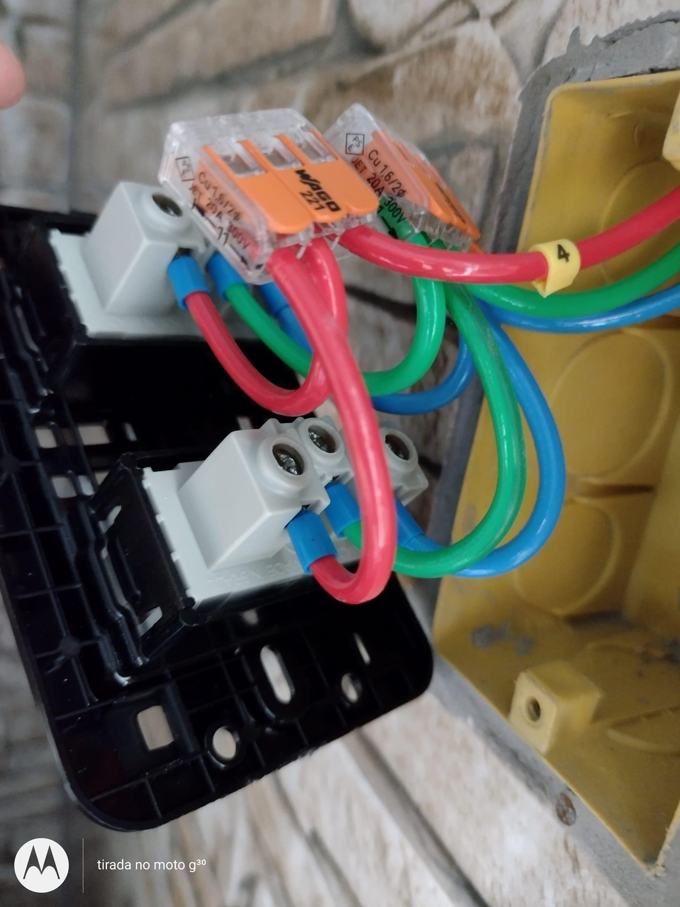

Porto Alegre e Região
⚠️ Disjuntor caindo ou
Atendimento para falhas reais: disjuntor caindo, cheiro de queimado e quedas de energia.
⚠️ Disjuntor caindo ou
cheiro de queimado?
Atendimento para falhas reais: disjuntor caindo, cheiro de queimado e quedas de energia.
Diagnóstico elétrico especializado para identificar a causa exata do problema antes que ele se torne um prejuízo irreparável.
Resolver problema agora Descreva o problema e entenda o risco antes que ele aumente.Sinais de Alerta:
Disjuntor desarmando sozinho
Cheiro de fio queimando
Parte da casa sem energia
Luz piscando ou oscilando
Diagnóstico técnico evita trocas desnecessárias e reduz riscos ocultos.
A partir de R$ 250
VALOR 100% ABATIDO NO SERVIÇO
Identificamos a causa real da falha com instrumentação técnica profissional, evitando gastos por tentativa e erro.
Diagnóstico Técnico Especializado
Atuamos com termografia e análise de rede para encontrar o que o eletricista comum não vê. Foco total em precisão e segurança normativa.
Registros Técnicos
 Análise Técnica
Análise Técnica
 Verificação QDC
Verificação QDC
 Diagnóstico Final
Diagnóstico Final
 Comandos
Comandos
 Resultado
Resultado
Análise TécnicaVerificação QDCDiagnóstico FinalComandos
Ponto CríticoResultado
Problemas elétricos raramente se resolvem sozinhos. Quando se repetem, tendem a piorar com o tempo. Não ignore os sinais de alerta.